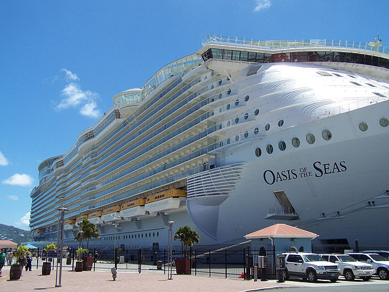

Overview
Allure of the Seas is an Oasis-class cruise ship was built at STX Europe Turku shipyard in Finland for Royal Carribean International. Her first voyage was in December 1, 2010 from Port Everglades, Florida, United States.
Allure of the Seas sailed year round in the Carribean Region out of Port Everglades from 2010 to 2014. She changed port to Barcelona and sailed the Mediterranean between May and October 2015. Afterward, she returned to Port Everglades, Florida.
Allure of the Seas will move its home port to Port Miami in November 2018, where Royal Carribean will construct a new cruise terminal.
Oasis of the Seas is also Oasis-class cruise ship. Oasis class cruise ship is a class of Royal Carribean International Cruise Ship which are the world largest cruise ship. Her maiden voyage was in December 5, 2009 from Port Canaveral, Florida, United States. Allure of the Seas is 50 millimeters(.5ft) longer than Oasis of the Seas.
Oasis of the Seas was christened on November 30, 2009. Her godmothers are Daisy Fuentes, Dara Torres, Gloria Estefan, Jane Saymour, Keisha Knight Pulliam, Michelle Kwan, Shawn Johnson.
Allure of the Seas and Oasis of the Seas have the same amenities. To accomodate the growing business in the industry, Royal Carribean International has been taking steps to expand their cruise lines.
Oasis of the Seas Cruise Ship
State Rooms
Allure of the Seas and Oasis of the Seas have a total oof 18 decks and about 2,700 rooms, can accomodate about 5500 guests and 2,100 crew. Each cabin comes in different sizes to accomodate the number of guests in a group:
- Interior: 149sq ft to 193sq ft
- Oceanview/Central Park view: 179sq ft to 199sq ft
- Balcony: 230sq ft to 250sq ft
- Mini Suite: 287dq ft
- Suite: 476sq ft to 1500sq ft
- Family: 260sq ft to 300sq ft
Deck 16
Amenities
Things to do on board:
- Dining Venues/Restaurants
- The Aqua and Amber Theatres
- Swimming Pool
- Video Games/Arcade
- Surf Simulator
- Zip Line/Rock Climbing Walls
- Jazz Music
- Casino
- Ice Rink
- High Speed Internet
- Comedy Show
- Spa/Fitness
Surf Simulator